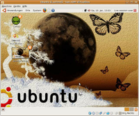

LiveCD manuell remastern
Dieser Artikel wurde für die folgenden Ubuntu-Versionen getestet:
Ubuntu 16.04 Xenial Xerus
Ubuntu 14.04 Trusty Tahr
Zum Verständnis dieses Artikels sind folgende Seiten hilfreich:
Bei der Verwendung der Ubuntu Live-CD kann es vorkommen, dass man dort ganz bestimmte Funktionen oder Einstellungen vermisst (installierter Openssh-Server, standardmäßig aktivierter VNC-Server, usw.). Um dem Abhilfe zu verschaffen, ist es möglich, die Live-CD per Hand anzupassen. Die hierzu nötigen Schritte sollen im Verlauf dieser Anleitung erklärt werden.
Systemvoraussetzungen¶
Das Remastern von Live-CDs erfordert, dass zeitweise mehrere unkomprimierte Kopien der Ausgangs-CD auf der Festplatte existieren. Deshalb sollte man dafür sorgen, dass zumindest 3-5 Gigabyte Festplattenplatz sowie mindestens 512 Megabyte Arbeits- und Auslagerungsspeicher zur Verfügung stehen.
Des Weiteren müssen die folgenden Pakete auf dem System installiert [1] werden:
squashfs-tools
genisoimage
 mit apturl
mit apturl
Paketliste zum Kopieren:
sudo apt-get install squashfs-tools genisoimage
sudo aptitude install squashfs-tools genisoimage
Hinweis:
Es bietet sich außerdem an, eine Virtualisierungsumgebung zu installieren, um das später erstellte CD-Image zu testen. So spart man Zeit und CD-Rohlinge.

Vorbereitung¶
Die folgenden Schritte sind so gefasst, dass man die einzelnen Befehle weitgehend per "Copy&Paste" verwenden kann. Dennoch sollte man sich der Funktion der jeweiligen Befehle bewusst sein.
Vorbereiten der Umgebung¶
Für das Remastern ist eine existierende Live-CD oder ein entsprechendes Image notwendig. Je nach Umgebung muss ein Image manuell eingehängt werden [3].
Zunächst werden neue Umgebungsvariablen definiert. Sie enthalten Arbeitspfad und Quellpfad für die folgenden Schritte und müssen entsprechend angepasst werden. Die Variable SOURCE sollte dabei auf den Mountpoint der Ausgangsdaten zeigen, WORK definiert ein neues Verzeichnis für die eigentlichen Arbeitsschritte, welches direkt angelegt wird.
export SOURCE="/media/cdrom0"
export WORK="~/remastern"
mkdir -p "${WORK}" Anschließend lässt sich der Inhalt des Installationsmediums wie folgt in das Arbeitsverzeichnis kopieren:
cd "${WORK}"
mkdir ubuntu-livecd
cp -a "${SOURCE}/." ubuntu-livecd
sudo chmod -R u+w ubuntu-livecd Platz schaffen¶
Bei einigen Ubuntudistributionen existieren zusätzliche Dateien, die nur für Windowsanwender von Interesse sind. Um Platz für weitere Pakete zu gewinnen, lassen sich diese Dateien entfernen.
Eine Möglichkeit Windowsdateien zu finden ist:
find "${WORK}/ubuntu-livecd" -name "*.exe" Hinweis:
Falls gewünscht wird, zusätzliche oder veränderte Inhalte für Windowsnutzer (anderer Autostart/Programme) zu hinterlegen, ist jetzt eine gute Gelegenheit. Im Live-CD Modus sind diese Inhalte allerdings nicht standardmäßig verfügbar.
Live-System mounten¶
Das Dateisystem der Live-CD befindet sich komprimiert in der Datei ${WORK}/ubuntu-livecd/casper/filesystem.squashfs und wird beim Start von CD entpackt. Um Zugriff auf die Systemdateien zu erhalten, muss es entsprechend gemountet werden.
mkdir "${WORK}/old"
sudo mount -t squashfs -o loop,ro "${WORK}/ubuntu-livecd/casper/filesystem.squashfs" "${WORK}/old" Live-System umsiedeln¶
Das gemountete Live-System kann bisher nicht manipuliert werden, dazu ist eine schreibfähige Umgebung notwendig. Das originale Dateisystem nimmt ungefähr 2-2,5 GByte dekomprimierten Platz ein. Mit:
sudo dd if=/dev/zero of="${WORK}/ubuntu-fs.ext2" bs=1M count=3000
sudo mke2fs "${WORK}/ubuntu-fs.ext2" wird eine neue 3 GByte große Datei als zukünftige Heimat des Dateisystems angelegt und formatiert. Der Hinweis, dass es sich beim Ziel um kein reelles Blockgerät handelt, kann ignoriert werden. Möchte man mehrere Programme hinzufügen, sind 3 GByte Platz sehr knapp, zumal durch die Komprimierung deutlich größere Dateisysteme auf eine DVD passen. Hier sind Werte von 5 und mehr GByte - entsprechend einem "count=5000" - realistischer.
Hinweis:
Will man weitere Pakete installieren, empfiehlt es sich zusätzlichen Speicherplatz einzuplanen. Sofern im Ausgleich keine weiteren Pakete gelöscht werden, erfordert dies ggf. allerdings ein größeres Installationsmedium, als eine DVD.
Im Anschluss wird die neue Partition eingebunden und mit den Daten der Live-CD besiedelt.
mkdir "${WORK}/new"
sudo mount -o loop "${WORK}/ubuntu-fs.ext2" "${WORK}/new"
sudo cp -a "${WORK}/old/." "${WORK}/new" Danach kann das ursprüngliche Dateisystem wieder entbunden werden:
sudo umount "${WORK}/old" Bearbeiten des Live-Systems¶
Zugriff auf das Live-System¶
Damit während der Bearbeitung des neuen Live-Systems alle nötigen Funktionen zur Verfügung stehen, bedarf es wieder einiger kleiner Vorbereitungen.
Zuerst wird eine aktuelle Version der Datei /etc/resolv.conf im Live-System hinterlegt. Dies stellt sicher, dass Domainnamen auch innerhalb des Live-Systems aufgelöst werden können. Dieser Schritt ist auch notwendig, wenn keine Netzwerkverbindung besteht!
sudo cp /etc/resolv.conf "${WORK}/new/etc/" Damit Programme innerhalb des Live-Systems störungsfrei betrieben werden können, muss weiterhin /proc Informationen über den Kernel- und Prozesszustände liefern können.
sudo mount -t proc -o bind /proc "${WORK}/new/proc" Werden zur Ausführung innerhalb des Live-Systems weitere tty benötigt, sind diese ebenfalls zu binden.
sudo mount -o bind /dev/pts "${WORK}/new/dev/pts" Experten-Info:
Ggf. sollen dem Live-System Nutzer zusätzliche Dokumente zur Verfügung stehen. Beim Starten der Live-CD wird für den Nutzer ein Verzeichnis /home/ubuntu angelegt, das sich gut eignet zusätzliche Dokumente zu hinterlegen. Will man zB. ein Dokument auf dem Desktop des Live-CD Nutzers hinterlegen, erstellt man im Voraus das Verzeichnis ${WORK}/new/home/ubuntu/Desktop und hinterlegt dort entsprechend die Datei(en). Um wie gewohnt mit den Dateien arbeiten zu können, empfielt es sich die Dateien per chown dem Live-System-Nutzer zuzuordnen.
Jetzt kann das Live-System als neues Rootsystem verwendet werden
sudo chroot "${WORK}/new" /bin/bash Bearbeiten des Live-Systems¶
Hinweis:
Innerhalb der aktuellen chroot-Umgebung werden alle Änderungen relativ zum Wurzelverzeichnis des zukünftigen Livesystems ausgeführt. Das bedeutet insbesondere, dass nur bereits auf dem Livesystem vorhandene Programme und Einstellungen sichtbar sind.
Bearbeiten der installierten Pakete¶
Um Platz zu schaffen oder neue Funktionalitäten zur Verfügung zu stellen, kann die normale Paketverwaltung auf Konsolenebene verwendet werden, z.B. per apt-get. Eventuell sollen Pakete aus anderen Quellen installiert werden, hierzu kann die entsprechende Quelle in die Datei sources.list eingetragen werden.
Bearbeiten der Oberfläche (GNOME)¶
Um eigene Einstellungen an der Oberfläche GNOME vorzunehmen, existiert das Kommandozeilentool gconftool-2. Eine Beschreibung aller Möglichkeiten dieses Tools wäre zu umfangreich. Einen Überblick bietet die zugehörige Manpage. Im Folgenden werden nur einige Beispiele vorgestellt.
Setzen eines eigenen Wallpapers¶
Das neue Wallpaper sollte außerhalb der chroot-Umgebung in das Verzeichnis ${WORK}/new/usr/share/backgrounds kopiert werden, danach lässt sich das Wallpaper per:
gconftool-2 \
--direct \
--config-source xml:readwrite:/etc/gconf/gconf.xml.defaults \
--type=string \
--set /desktop/gnome/background/picture_filename /usr/share/backgrounds/DATEINAME setzen.
Eine andere Systemschrift einstellen¶
gconftool-2 \
--direct \
--config-source xml:readwrite:/etc/gconf/gconf.xml.defaults \
--type=string --set /desktop/gnome/interface/font_name "FONTNAME FONTGROESSE" Eine andere Standardanwendung festlegen¶
Leider unterstützt gconftool-2 noch nicht das Ändern von Standardanwendungen. Eine Anpassung ist aber leicht durch die Bearbeitung der Datei /etc/gnome/defaults.list möglich.
Abschließen der Modifikationen¶
Wurden alle gewünschten Änderungen vorgenommen, ist es Zeit die Umgebung des Live-Systems wieder zu verlassen. Mit:
exit
sudo umount "${WORK}/new/proc"
sudo umount "${WORK}/new/dev/pts"
sudo rm "${WORK}/new/etc/resolv.conf" wird die chroot-Umgebung verlassen und die induzierten Mountpoints und Netzwerkkonfigurationen werden entfernt.
Weiterhin ist es notwendig die vorgenommenen Änderungen im Live-System zu registrieren. Der Befehl
sudo chroot "${WORK}/new" dpkg-query -W --showformat='${Package} ${Version}\n' \
> "${WORK}/ubuntu-livecd/casper/filesystem.manifest" wechselt noch einmal kurzzeitig in die Umgebung des Live-Systems, um Änderungen innerhalb der Paketverwaltung zu aktualisieren.
Komprimieren des Live-Systems¶
Unabhängig davon, wie viele Dateien während der Bearbeitung gelöscht wurden, existieren deren Daten noch immer im virtuellen Dateisystem und müssten beim Komprimieren mit erfasst werden. Deshalb werden im Folgenden die freigegebenen Bereiche im Dateisystem mit einer Datei voller Nullwerte überschrieben und im Anschluss gelöscht.
sudo dd if=/dev/zero of="${WORK}/new/dummyfile"
sudo rm "${WORK}/new/dummyfile" Danach lassen sich das Live-System komprimieren und die restlichen Mountpoints lösen. Das kann eine Weile dauern.
Hinweis:
Seit Natty (11.04) ist in den squashfs-tools die Unterstützung für die sehr wirkungsvollen LZMA-Komprimierung enthalten. Zur Nutzung dessen muss man am Ende der 3. Zeile des folgenden Befehlsblocks nur -comp xz anfügen.
sudo rm "${WORK}/ubuntu-livecd/casper/filesystem.squashfs"
cd "${WORK}/new"
sudo mksquashfs . "${WORK}/ubuntu-livecd/casper/filesystem.squashfs"
cd "${WORK}"
sudo umount "${WORK}/new" Erstellen der Live-CD¶
Damit die Fehlerprüfung der Live-CD funktioniert, erstellen wir noch einen neuen Hashwert. Danach sollten keine weiteren Änderungen an der CD vorgenommen werden!
cd "${WORK}/ubuntu-livecd"
sudo find . -type f -print0 |xargs -0 md5sum |sudo tee md5sum.txt Schließlich beenden wir den Remastering-Prozess durch das Erstellen eines neuen CD-Images:
cd "${WORK}"
sudo genisoimage \
-o ubuntu-new.iso \
-b isolinux/isolinux.bin \
-c isolinux/boot.cat \
-no-emul-boot \
-boot-load-size 4 \
-boot-info-table \
-r \
-V "Custom Ubuntu Live CD" \
-cache-inodes \
-J \
-l \
ubuntu-livecd - Erstellt mit Inyoka
-
 2004 – 2017 ubuntuusers.de • Einige Rechte vorbehalten
2004 – 2017 ubuntuusers.de • Einige Rechte vorbehalten
Lizenz • Kontakt • Datenschutz • Impressum • Serverstatus -
Serverhousing gespendet von